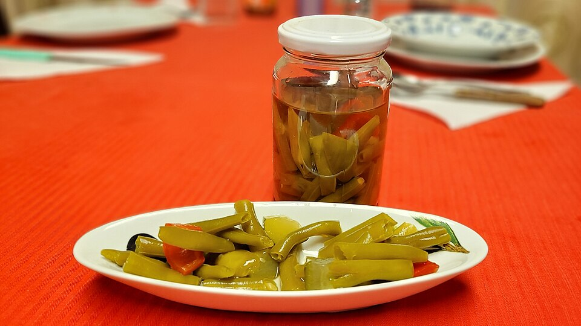

Published July 11, 2023
Sour Dill Wax Beans (Sauer Dill Bohnen)
Bavarian yellow beans, sweet-sour and herbed
- Beans & Legumes
- Side Dish
- German (Bavarian)
- one pot
- quick side
- gluten free
Yellow wax beans blanched, then tossed in a warm sweet-sour dill sauce thickened with a roux. A classic Bavarian side for roast pork, sausages and new potatoes.

Photo: Horacio Cambeiro · CC BY-SA 4.0 · via Wikimedia Commons · all image credits
Ingredients
- 2 pounds (900 g) yellow wax beans, topped and tailed
- 1 1/2 teaspoons kosher salt, for the blanching water
- 2 tablespoons unsalted butter
- 2 tablespoons all-purpose flour
- 1 cup bean cooking water or vegetable stock
- 1/2 cup whole milk or cream
- 3 tablespoons white wine vinegar or cider vinegar
- 2 teaspoons sugar, or to taste
- 1/2 teaspoon freshly ground white pepper
- 1/4 teaspoon freshly grated nutmeg
- 1/4 cup chopped fresh dill, plus more to serve
- 1 tablespoon chopped chives
Equipment
- Large saucepan
- Small saucepan
- Colander
- Whisk
- Slotted spoon
Why this recipe works
Sauer Dill Bohnen is what German home cooks do with a pressure cooker full of yellow beans in July: blanch the pods, then finish them in a light sweet-sour sauce built on a flour and butter roux. It is one of the great vegetable side dishes of central Europe, and it is entirely made from pantry staples.
The sauce should be thin enough to spoon over potatoes and sharp enough to be interesting. Taste it before the beans go in and adjust the sugar and vinegar; the balance matters more than the exact quantities.
Heirloom varieties to look for
Yellow wax beans hold their shape and colour far better than green beans in this dish. Look for Golden Wax, Brittle Wax, or the flatter, meatier Beurre de Roquencourt. Pick the pods at pencil thickness.
Method
Blanch the beans
Bring a large pot of water to a rolling boil and add the salt. Cook the beans for 4 to 5 minutes, until crisp-tender and just losing their raw snap. Scoop them into a colander and reserve 1 cup of the cooking water.
Shock, but not too cold
Rinse the beans briefly under cool water to stop the cooking, then leave them to drain well. Do not soak them in ice water; they will take on too much water and thin the sauce.
Make the roux
Melt the butter in the small saucepan over medium-low heat. Whisk in the flour and cook for 2 minutes, stirring constantly, until the mixture smells toasted but has not coloured.
Build the sauce
Whisk in the reserved bean water in a steady stream, then the milk, and simmer for 3 minutes until the sauce is smooth and lightly thickened. It should coat a spoon but still pour.
Season sweet and sour
Add the vinegar, sugar, white pepper and nutmeg. Taste and adjust: the sauce should be tangy first, sweet second, with a warm background of nutmeg.
Finish the beans
Add the drained beans to the sauce and simmer gently for 3 to 4 minutes so they absorb the flavour. Stir in the dill and chives off the heat and serve immediately with boiled potatoes and roast meat.
Cook's notes
- Vinegar loses its edge as it cooks, so add half at the start and the rest off the heat.
- A pinch of baking soda in the blanching water keeps yellow beans bright rather than olive.
- If the sauce thickens too much while standing, loosen it with a splash of milk or stock, never water.
Variations
- Brown 4 ounces of diced bacon, remove it, and build the roux in the rendered fat. Crumble the bacon over the beans to serve.
- Add 1 tablespoon of Dijon mustard with the vinegar for a sharper, more northern sauce.
- Swap half the beans for snap peas or romano beans for a mixed-pod version.
Storage
Refrigerate for up to 3 days in a covered dish. Reheat gently in a saucepan with a splash of milk; the sauce thickens on standing, so it will need loosening. Not suitable for freezing.
How to serve it
About 1 cup per serving. Serve it within the time noted above for the best texture, because heirloom produce is far less forgiving than supermarket vegetables.